Introduction
The TCRrep S4 object is the central data structure in
tcrdistR. It holds the clonotype table, organism, distance matrices, and
downstream results in a single object. This vignette walks through a
complete analysis using TCRrep as the backbone.
Creating a TCRrep
Load the DASH dataset and construct a TCRrep. By default, identical clones within the same subject are deduplicated and their counts summed:
library(tcrdistR)
data(dash)
rep <- TCRrep(dash, organism = "mouse", compute_distances = TRUE)
#> deduplicate: 1924 -> 1888 clones
rep
#> TCRrep object: 1888 clonotypes
#> organism: mouse
#> chains: AB
#> metric: tcrdist
#> distances: paired(dense)The compute_distances = TRUE flag computes the full
pairwise distance matrix at construction time and stores it in the
paired_dist slot:
dim(rep@paired_dist)
#> [1] 1888 1888
rep@paired_dist[1:5, 1:5]
#> 1 2 3 4 5
#> 1 0 225 194 180 206
#> 2 225 0 201 228 298
#> 3 194 201 0 155 247
#> 4 180 228 155 0 308
#> 5 206 298 247 308 0Distance Heatmap
With distances already computed, pass the paired_dist
slot directly to the heatmap. We use a subset for readability:
library(ggplot2)
# First 50 clones
idx <- 1:50
plot_tcrdist_heatmap(rep@paired_dist[idx, idx],
title = "TCRdist heatmap (first 50 clones)")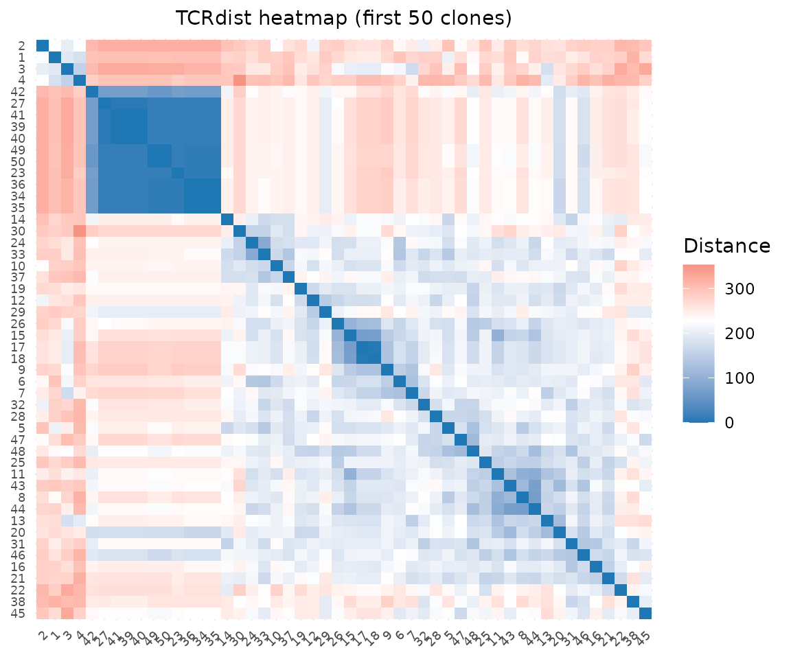
Distance Distribution
plot_distance_distribution(rep@paired_dist, title = "Pairwise distance distribution")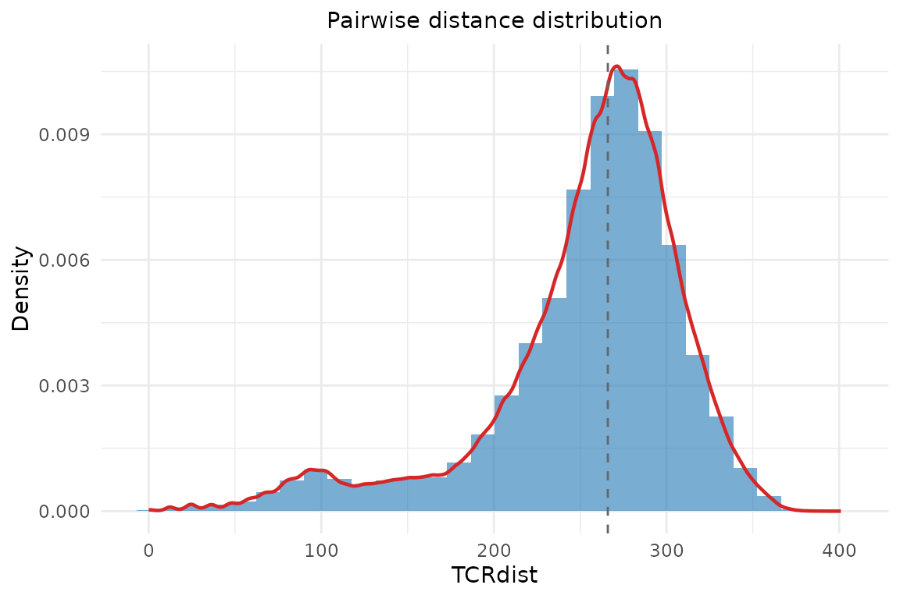
Gene Usage
Gene usage plots take the clone data.frame and a column name. Access
the clonotype table via rep@clone_df:
plot_gene_usage(rep@clone_df, "va", title = "V-alpha usage")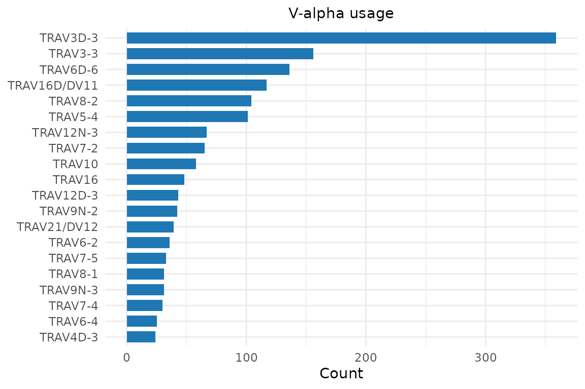
plot_gene_usage(rep@clone_df, "vb", title = "V-beta usage")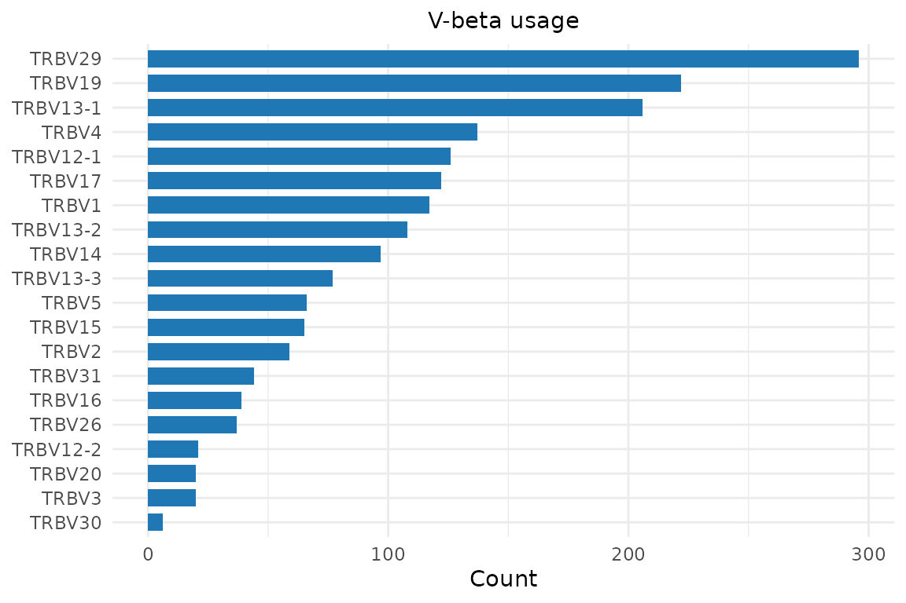
Dendrogram
The dendrogram function takes a data.frame and organism — extract from the TCRrep slots. We subsample for a cleaner plot:
sub_idx <- sample(nrow(rep@clone_df), 100)
plot_tcrdist_dendrogram(
rep@clone_df[sub_idx, ],
organism = rep@organism,
color_by = rep@clone_df$epitope[sub_idx],
title = "TCR dendrogram colored by epitope"
)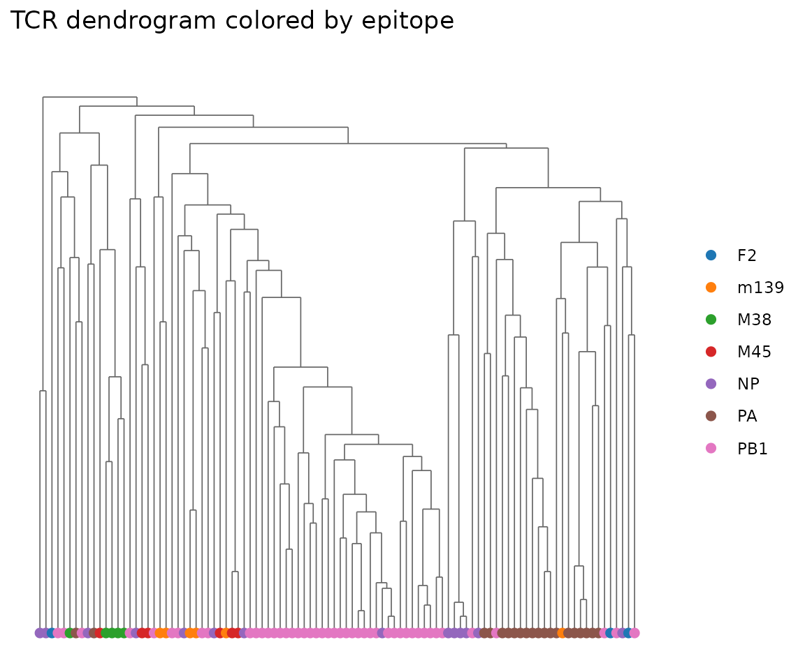
Kernel PCA and Scatter Plots
Kernel PCA projects the high-dimensional distance matrix into a few key axes (principal components) that capture the most variation. TCRs that cluster together in this 2D view share similar sequences — if they also share the same epitope label, that confirms that TCR sequence similarity predicts antigen specificity.
Compute a kernel PCA embedding from the TCRrep:
pca <- compute_tcrdist_kernel_pca(
rep@clone_df, organism = rep@organism,
n_components = 50L, method = "eigen"
)
dim(pca$embeddings)
#> [1] 1888 50Visualize the first two components, colored by epitope:
plot_tcr_scatter(
pca$embeddings[, 1:2],
color_by = rep@clone_df$epitope,
title = "Kernel PCA of DASH TCRs",
point_size = 1.5
)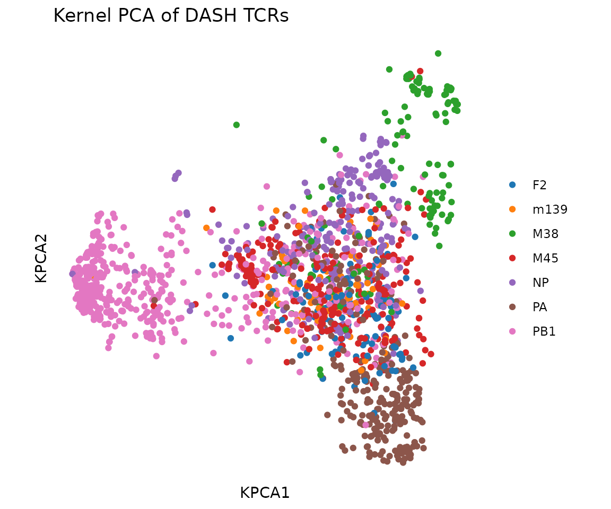
UMAP
UMAP provides a nonlinear 2D embedding that often separates clusters
better than linear PCA. compute_tcrdist_umap() supports two
modes:
-
KNN path (recommended): pass
tcr_df+organism. Computes TCRdist K-nearest-neighbors with chain group masking, builds a fuzzy simplicial set graph, and runs UMAP from the precomputed KNN. This preserves the TCRdist metric faithfully. -
PCA path: pass pre-computed
pca_embeddings. Runs standard UMAP in Euclidean space.
# KNN path: UMAP directly from TCRdist neighbors
umap <- compute_tcrdist_umap(
rep@clone_df, organism = rep@organism, seed = 42
)
plot_tcr_scatter(
umap$embeddings,
color_by = rep@clone_df$epitope,
title = "UMAP of DASH TCRs (KNN path)",
axis_label_prefix = "UMAP",
point_size = 1.5
)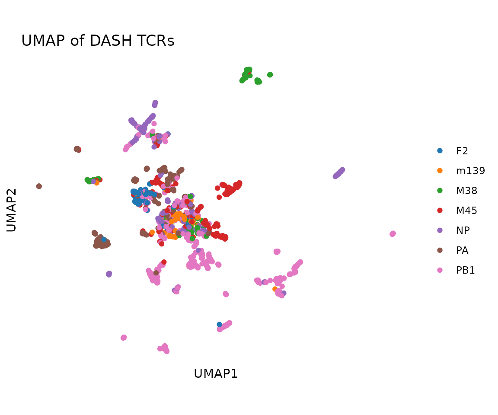
The KNN path also returns the fuzzy simplicial set graph and weighted nearest-neighbor distances:
dim(umap$knn_graph) # N x N sparse matrix
#> [1] 1888 1888
summary(umap$nndists) # weighted NN distances per clone
#> Min. 1st Qu. Median Mean 3rd Qu. Max.
#> 3.90 36.78 74.90 86.89 139.91 220.93Alternatively, use the PCA path for a quicker approximation:
umap_pca <- compute_tcrdist_umap(pca_embeddings = pca$embeddings, seed = 42)
plot_tcr_scatter(
umap_pca$embeddings,
color_by = rep@clone_df$epitope,
title = "UMAP of DASH TCRs (PCA path)",
axis_label_prefix = "UMAP",
point_size = 1.5
)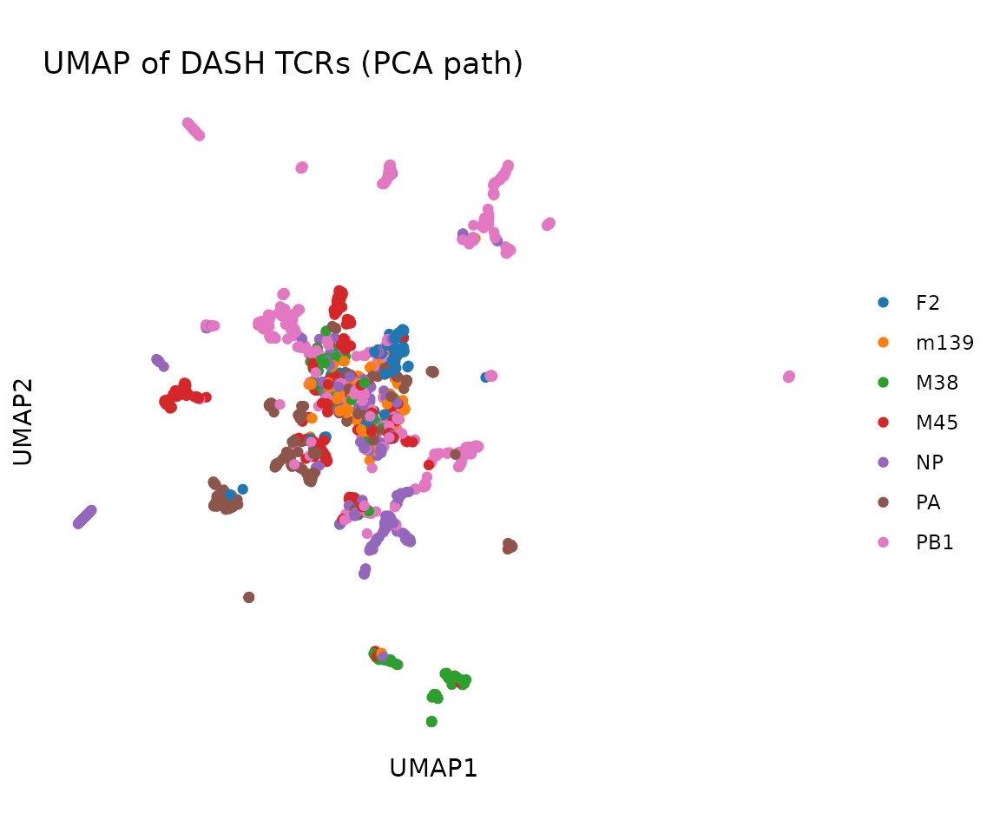
Single-Chain TCRrep
When working with beta-only data (e.g., from bulk sequencing), create
a TCRrep with chains = "B":
# Simulate beta-only data
beta_only <- rep@clone_df[1:50, c("vb", "cdr3b", "epitope", "subject", "count")]
rep_beta <- TCRrep(beta_only, organism = "mouse", chains = "B",
compute_distances = TRUE)
#> deduplicate: 50 -> 46 clones
rep_beta
#> TCRrep object: 46 clonotypes
#> organism: mouse
#> chains: B
#> metric: tcrdist
#> distances: paired(dense)
dim(rep_beta@paired_dist)
#> [1] 46 46
# All distance functions work with single-chain data
knn_beta <- tcrdist_knn(beta_only, "mouse", K = 3L)Clustering
Cluster TCRs and add cluster assignments to the clone table:
rep@clone_df$cluster <- cluster_tcrs(
rep@clone_df, organism = rep@organism, k = 7
)
table(rep@clone_df$cluster)
#>
#> 1 2 3 4 5 6 7
#> 1685 75 116 6 1 4 1Visualize clusters in PCA space:
plot_tcr_scatter(
pca$embeddings[, 1:2],
color_by = as.factor(rep@clone_df$cluster),
title = "Clusters in PCA space",
point_size = 1.5,
legend_title = "Cluster"
)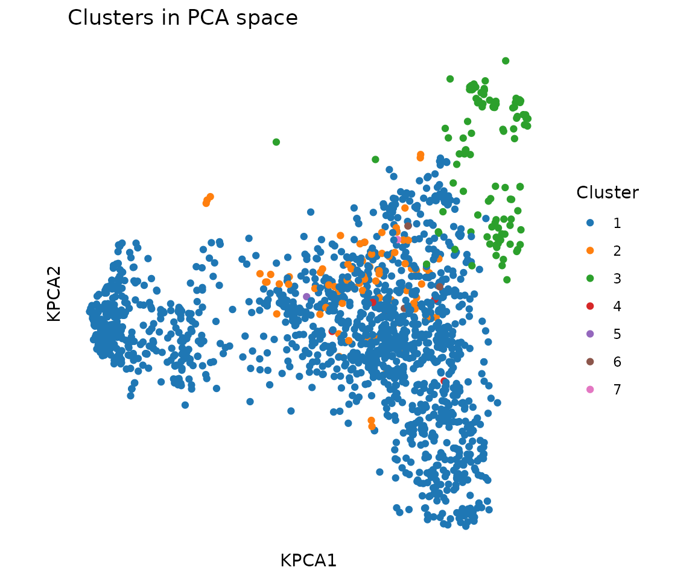
CDR3 Sequence Logos by Epitope
Extract CDR3 sequences for a specific epitope and plot a logo:
pa_idx <- rep@clone_df$epitope == "PA"
plot_cdr3_logo(
rep@clone_df$cdr3b[pa_idx],
chain = "beta", method = "bits",
title = "CDR3-beta logo (PA epitope)"
)
#> Warning: `aes_string()` was deprecated in ggplot2 3.0.0.
#> ℹ Please use tidy evaluation idioms with `aes()`.
#> ℹ See also `vignette("ggplot2-in-packages")` for more information.
#> ℹ The deprecated feature was likely used in the ggseqlogo package.
#> Please report the issue at <https://github.com/omarwagih/ggseqlogo/issues>.
#> This warning is displayed once per session.
#> Call `lifecycle::last_lifecycle_warnings()` to see where this warning was
#> generated.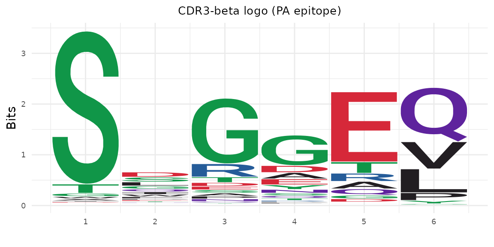
np_idx <- rep@clone_df$epitope == "NP"
plot_cdr3_logo(
rep@clone_df$cdr3b[np_idx],
chain = "beta", method = "bits",
title = "CDR3-beta logo (NP epitope)"
)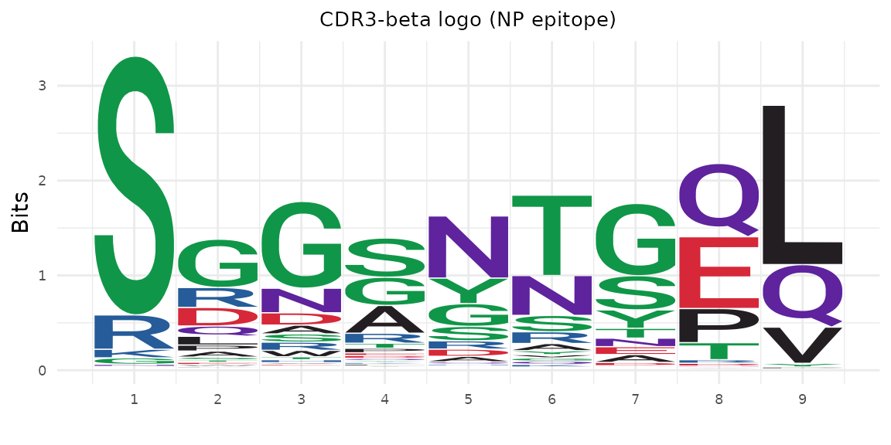
Neighborhood Test
The neighborhood test asks: for each TCR, are the nearby TCRs (within a distance radius) enriched for a particular label compared to the overall dataset? A significant result means that antigen specificity is encoded in the TCR sequence — nearby TCRs tend to recognize the same epitope.
Test whether epitope labels are enriched in TCR neighborhoods:
nhood <- neighborhood_test(
rep@clone_df, organism = rep@organism,
variable = rep@clone_df$epitope,
radius = 50, test = "chisq"
)
head(nhood[order(nhood$p_adjusted), c("index", "n_neighbors", "p_value", "p_adjusted")])
#> index n_neighbors p_value p_adjusted
#> 1171 1171 22 2.316573e-42 4.373690e-39
#> 411 411 37 8.751910e-42 5.507869e-39
#> 451 451 37 8.751910e-42 5.507869e-39
#> 305 305 36 1.419724e-40 7.883644e-39
#> 306 306 36 1.419724e-40 7.883644e-39
#> 345 345 36 1.419724e-40 7.883644e-39Meta-Clonotypes
Meta-clonotypes are groups of similar TCRs found in multiple individuals. They represent convergent immune responses — different people independently generate similar TCRs against the same antigen. These shared motifs can serve as biomarkers of antigen exposure or vaccine response.
Find TCR motifs shared across subjects:
meta <- find_meta_clonotypes(
rep@clone_df, organism = rep@organism,
radius = 48, min_nsubject = 2L,
subject_col = "subject"
)
nrow(meta)
#> [1] 1888
head(meta[, c("cdr3a", "cdr3b", "radius", "K_neighbors", "nsubject")])
#> cdr3a cdr3b radius K_neighbors nsubject
#> 1 CAAATSSGQKLVF CASSGTANSDYTF 48 1888 78
#> 2 CAVDYNQGKLIF CASSPLGGRRDTQYF 48 1888 78
#> 3 CAVLNNYAQGLTF CASSNLEAEQFF 48 1888 78
#> 4 CAVRDRNYAQGLTF CASSLELGDYAEQFF 48 1888 78
#> 5 CAAASSGSWQLIF CASSDFSNSDYTF 48 1888 78
#> 6 CAADNVGDNSKLIW CASSLLQLQDTQYF 48 1888 78Store back into the TCRrep:
rep@meta_clonotypes <- metaDiversity
Diversity metrics summarize how “spread out” a repertoire is. High clonality (close to 1) suggests antigen-driven clonal expansion; low clonality (close to 0) suggests a broad, polyclonal sample.
div <- tcr_diversity(rep@clone_df$count, order = 2)
div$effective_number # "equivalent number of equally-abundant clonotypes"
#> [1] 897.1068
tcr_clonality(rep@clone_df$count) # 0 = diverse, 1 = dominated
#> [1] 0.04746628Combined Panel
library(patchwork)
p1 <- plot_tcrdist_heatmap(rep@paired_dist[1:40, 1:40], title = "Heatmap")
p2 <- plot_distance_distribution(rep@paired_dist, title = "Distribution")
p3 <- plot_tcr_scatter(
pca$embeddings[, 1:2],
color_by = rep@clone_df$epitope,
title = "Kernel PCA", point_size = 1
)
p4 <- plot_gene_usage(rep@clone_df, "vb", title = "V-beta usage")
(p1 | p2) / (p3 | p4) +
plot_annotation(title = "DASH Repertoire Overview")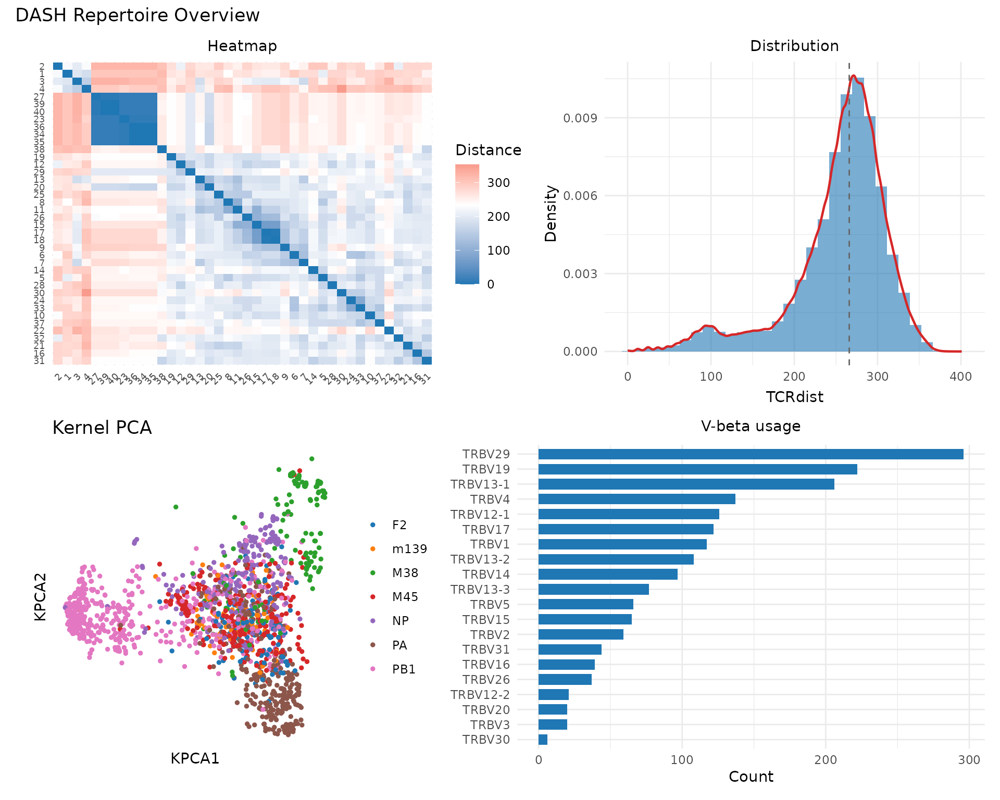
Integration with Other Tools
tcrdistR works with standard R data.frames, making it easy to integrate with other single-cell and repertoire analysis tools:
-
Seurat / scRepertoire: Extract TCR data from Seurat
metadata using
as_tcr_df(), run tcrdistR analyses, then add results (clusters, diversity scores) back to the Seurat object’s metadata. - immunarch: Use tcrdistR for distance-based analyses (neighborhood tests, meta-clonotypes) and immunarch for its gene usage statistics and tracking plots.
- Downstream: All tcrdistR results are standard R objects (data.frames, matrices, ggplot2 plots) that work with any R pipeline.
# Example: Seurat integration (pseudocode)
# tcr_meta <- seurat_obj@meta.data[, c("TRAV", "CDR3a", "TRBV", "CDR3b")]
# tcrs <- as_tcr_df(tcr_meta, col_map = c(va="TRAV", cdr3a="CDR3a",
# vb="TRBV", cdr3b="CDR3b"))
# clusters <- cluster_tcrs(tcrs, "human", k = 10)
# seurat_obj$tcr_cluster <- clustersSession Info
sessionInfo()
#> R version 4.6.1 (2026-06-24)
#> Platform: x86_64-pc-linux-gnu
#> Running under: Ubuntu 24.04.4 LTS
#>
#> Matrix products: default
#> BLAS: /usr/lib/x86_64-linux-gnu/openblas-pthread/libblas.so.3
#> LAPACK: /usr/lib/x86_64-linux-gnu/openblas-pthread/libopenblasp-r0.3.26.so; LAPACK version 3.12.0
#>
#> locale:
#> [1] LC_CTYPE=C.UTF-8 LC_NUMERIC=C LC_TIME=C.UTF-8
#> [4] LC_COLLATE=C.UTF-8 LC_MONETARY=C.UTF-8 LC_MESSAGES=C.UTF-8
#> [7] LC_PAPER=C.UTF-8 LC_NAME=C LC_ADDRESS=C
#> [10] LC_TELEPHONE=C LC_MEASUREMENT=C.UTF-8 LC_IDENTIFICATION=C
#>
#> time zone: UTC
#> tzcode source: system (glibc)
#>
#> attached base packages:
#> [1] stats graphics grDevices utils datasets methods base
#>
#> other attached packages:
#> [1] patchwork_1.3.2 ggplot2_4.0.3 tcrdistR_0.1.0
#>
#> loaded via a namespace (and not attached):
#> [1] Matrix_1.7-5 gtable_0.3.6 jsonlite_2.0.0 compiler_4.6.1
#> [5] Rcpp_1.1.2 FNN_1.1.4.1 jquerylib_0.1.4 systemfonts_1.3.2
#> [9] scales_1.4.0 textshaping_1.0.5 yaml_2.3.12 fastmap_1.2.0
#> [13] uwot_0.2.4 lattice_0.22-9 R6_2.6.1 labeling_0.4.3
#> [17] igraph_2.3.3 knitr_1.51 desc_1.4.3 pillar_1.11.1
#> [21] bslib_0.12.0 RColorBrewer_1.1-3 rlang_1.3.0 cachem_1.1.0
#> [25] xfun_0.60 fs_2.1.0 sass_0.4.10 S7_0.2.2
#> [29] otel_0.2.0 cli_3.6.6 magrittr_2.0.5 pkgdown_2.2.1
#> [33] withr_3.0.3 digest_0.6.39 grid_4.6.1 lifecycle_1.0.5
#> [37] vctrs_0.7.3 RSpectra_0.16-2 evaluate_1.0.5 glue_1.8.1
#> [41] farver_2.1.2 ragg_1.5.2 ggseqlogo_0.2.2 rmarkdown_2.31
#> [45] pkgconfig_2.0.3 tools_4.6.1 htmltools_0.5.9